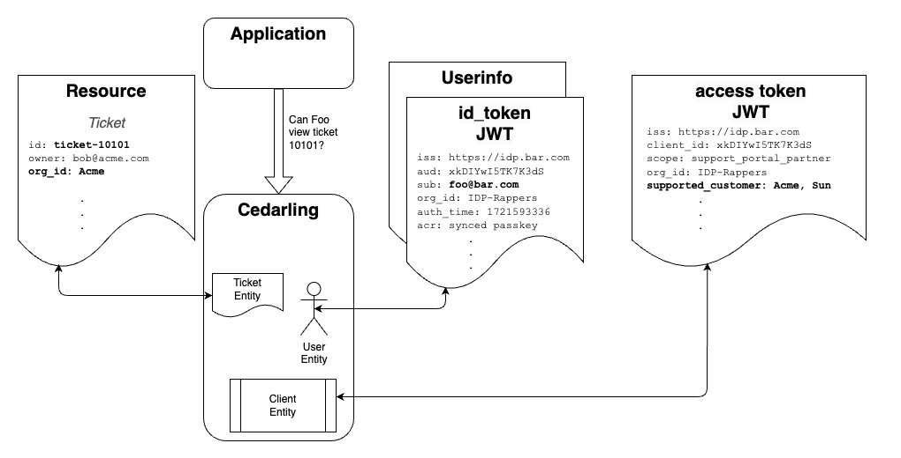

Authorization Using Cedarling#
The Policy Store contains the Cedar Policies, Cedar Schema, and optionally, a list of the Trusted IDPs. The Cedarling loads its Policy Store during initialization as a static JSON file or fetched via HTTPS. In enterprise deployments, the Cedarling can retrieve its Policy Store from a Jans Lock Server OAuth protected endpoint.
Developers need to define Cedar Schema that makes sense for their application. For example, a developer writing a customer support application might define an "Issue" Resource and Actions like "Reply" or "Close". Once the schema is defined, developers can author policies to model the fine grain access controls needed to implement the business rules of their application. The easiest way to define schema and policies is to use the AgamaLab Policy Designer. This is a free developer tool hosted by Gluu.

The JWTs, Resource, Action, and Context are sent in the authz request. Cedar Pricipals entities are derived from JWT tokens. The OpenID Connect ("OIDC") JWTs are joined by the Cedarling to create User and Role entities; the OAuth access token is used to create a Workload entity, which is the software that is acting on behalf of the Person (or autonomously). The Cedarling validates that given its policies, Role, Person and Workload are authorized. If one of Role or Person and Workload is authorized then the request is allowed to proceed.
The Cedarling maps "Roles" out-of-the-box. In Cedar, Roles are a special kind of Principal. Instead
of saying "User can perform action", we can say "Role can perform action"--a convenient way to
implement RBAC. Developers can specify which JWT claim is used to map Cedar Roles. For example, one
domain may use the role user claim of the OpenID Userinfo token; another domain may use the
memberOf claim in the OIDC id_token.
Developers can also express a variety of policies beyond the limitations of RBAC by expressing ABAC conditions, or combining ABAC and RBAC conditions. For example, a policy like Admins can access a "private" Resource from the private network, during business hours. In this case "Admins" is the role, but the other conditions are ABAC. Policy evaluation is fast because Cedar uses the RBAC role to "slice" the data, minimizing the number of entries on which to evaluate the ABAC conditions.
The OIDC id_token JWT represents a Person authentication event. The access token JWT represents a
Workload authentication event. These tokens contain other interesting contextual data. The id_token
tells you who authenticated, when they authenticated, how they authenticatated, and optionally other
claims like the User's roles. An OAuth access token can tell you information about the Workload that
obtained the JWT, its extent of access as defined by the OAuth Authorization Server (i.e. the
values of the scope claim), or other claims--domains frequently enhance the access token to
contain business specific data needed for policy evaluation.
The Cedarling authorizes a Person using a certain piece of software, which is called a "Workload".
From a logical perspective, (person_allowed AND workload_allowed) must be True. The JWT's,
Action, Resource and Context is sent by the application in the authorization request. For example,
this is a sample request from a hypothetical application:
const bootstrap_config = {...};
const cedarling = await init(bootstrap_config);
let input = {
"tokens": {
"access_token": "eyJhbGc....",
"id_token": "eyJjbGc...",
"userinfo_token": "eyJjbGc...",
},
"action": "View",
"resource": {
"cedar_entity_mapping": {
"entity_type": "Ticket",
"id": "ticket-10101"
},
"owner": "bob@acme.com",
"org_id": "Acme"
},
"context": {
"ip_address": "54.9.21.201",
"network_type": "VPN",
"user_agent": "Chrome 125.0.6422.77 (Official Build) (arm64)",
"time": "1719266610.98636",
}
}
decision_result = await cedarling.authorize(input)
Automatically Adding Entity References to the Context#
Cedarling simplifies context creation by automatically including certain entities. This means you don't need to manually pass their references when using them in your policies. The following entities are automatically added to the context.
- Workload Entity
- User Entity
- Resource Entity
- Access Token Entity
- ID Token Entity
- Userinfo Token Entity
Additionally, any default entities defined in the policy store are available for all authorization decisions without needing to be explicitly passed in the request. Entity merging automatically resolves conflicts, ensuring that request entities take precedence over default entities when UIDs match.
Example Policy#
Below is an example policy schema that illustrates how entities are used:
type Context = {
"access_token": Access_token,
"time": Long,
"user": User,
"workload": Workload
};
type Url = {
"host": String,
"path": String,
"protocol": String
};
entity Access_token = {
"exp": Long,
"iss": Jans::TrustedIssuer
};
entity Issue = {
"country": String,
"org_id": String
};
entity Role;
namespace Jans{
entity TrustedIssuer = {
"issuer_entity_id": Url
};
}
entity User in [Role] = {
"country": String,
"email": String,
"sub": String,
"username": String
};
entity Workload = {
"client_id": String,
"iss": Jans::TrustedIssuer,
"name": String,
"org_id": String
};
action "Update" appliesTo {
principal: [Role, Workload, User],
resource: [Issue],
context: {
"access_token": Access_token,
"time": Long,
"user": User,
"workload": Workload
}
};
action "View" appliesTo {
principal: [Role, Workload, User],
resource: [Issue],
context: Context
};
Note: The TrustedIssuer namespace corresponds to its name.
With this schema, you only need to provide the fields that are not automatically included. For instance, to define the time in the context:
let context = {
time: 1719266610.98636,
};
Unsigned Authorization (authorize_unsigned)#
The authorize_unsigned method allows making authorization decisions without JWT token verification. This is useful when:
- You already have verified the principals through other means
- You need to make authorization decisions for non-token based scenarios
- You're implementing custom authentication flows
Example usage:
let input = {
principals: [
{
id: "user123",
type: "User",
email: "user@example.com",
roles: ["admin"],
},
],
action: "View",
resource: {
cedar_entity_mapping: {
entity_type: "Ticket",
id: "ticket-10101",
},
owner: "bob@acme.com",
org_id: "Acme",
},
context: {
ip_address: "54.9.21.201",
network_type: "VPN",
user_agent: "Chrome 125.0.6422.77 (Official Build) (arm64)",
time: "1719266610.98636",
},
};
decision_result = await cedarling.authorize_unsigned(input);
When to use authorize_unsigned vs authorize#
| Feature | authorize | authorize_unsigned |
|---|---|---|
| JWT validation | Yes | No |
| Token requirements | Requires valid JWTs | Accepts raw entities |
| Use case | Standard auth flows | Custom auth flows |
| Security | Higher (validates) | Lower (trusts input) |
Multi-Issuer Authorization (authorize_multi_issuer)#
The authorize_multi_issuer method enables authorization decisions based on multiple JWT tokens from different issuers in a single request. Unlike the standard authorize method which creates User and Workload principals, multi-issuer authorization evaluates policies based purely on token entities themselves.
Key Differences from Standard Authorization#
| Feature | authorize | authorize_multi_issuer |
|---|---|---|
| Principal Model | User/Workload entities | No principals - token-based context |
| Token Sources | Single issuer expected | Multiple issuers supported |
| Token Types | Fixed (access, id, userinfo) | Flexible with explicit mapping |
| Context Structure | User/Workload in context | Individual token entities in context.tokens |
| Use Case | Standard RBAC/ABAC flows | Federation, API gateways, multi-issuer apps |
| Policy Principal | principal is User/Workload |
Not applicable (principal-less) |
| Policy Context Access | context.user, context.workload |
context.tokens.{issuer}_{token_type} |
How It Works#
- Token Input: Developers provide an array of
TokenInputobjects, each containing: mapping: The Cedar entity type (e.g., "Jans::Access_Token", "Acme::DolphinToken")-
payload: The JWT token string -
Token Validation: Each token is validated using the existing Cedarling JWT validation capabilities:
- Signature verification
- Expiration and time-based validation
- Status list validation (if configured)
-
Only tokens from trusted issuers are processed
-
Entity Creation: Each valid token becomes a Cedar entity with:
- Token metadata (type, jti, issuer, exp, validated_at)
- JWT claims stored as entity tags
-
All claims stored as Sets of strings by default for consistency
-
Context Building: Valid tokens are organized into a
tokenscollection with predictable naming: - Field naming:
{issuer_name}_{token_type} - Example:
context.tokens.acme_access_token,context.tokens.google_id_token -
Issuer name comes from trusted issuer metadata or JWT iss claim
-
Policy Evaluation: Policies evaluate based on token entities in context without requiring a principal
Example Usage#
// Create tokens array with explicit mappings
let tokens = [
{
mapping: "Jans::Access_Token",
payload: "eyJhbGciOiJIUzI1NiIs..."
},
{
mapping: "Jans::Id_Token",
payload: "eyJhbGciOiJFZERTQSIs..."
},
{
mapping: "Acme::DolphinToken",
payload: "ey1b6cfMef21084633a7..."
}
];
// Create multi-issuer request
let request = {
tokens: tokens,
action: "Jans::Action::\"Read\"",
resource: {
cedar_entity_mapping: {
entity_type: "Jans::Document",
id: "doc-123"
},
owner: "alice@example.com",
classification: "confidential"
},
context: {
ip_address: "54.9.21.201",
time: Date.now()
}
};
// Execute authorization
let result = await cedarling.authorize_multi_issuer(request);
// Check decision
if (result.decision) {
console.log("Access allowed");
} else {
console.log("Access denied");
}
Policy Examples#
Policies for multi-issuer authorization reference tokens directly in the context:
// Policy checking token from specific issuer with claim
permit(
principal,
action == Jans::Action::"Read",
resource in Jans::Document
) when {
context has tokens.acme_access_token &&
context.tokens.acme_access_token.hasTag("scope") &&
context.tokens.acme_access_token.getTag("scope").contains("read:documents")
};
// Policy requiring tokens from multiple issuers
permit(
principal,
action == TradeAssociation::Action::"Vote",
resource in TradeAssociation::Resource::"Elections"
) when {
// Require token from trade association
context has tokens.trade_association_access_token &&
context.tokens.trade_association_access_token.hasTag("member_status") &&
context.tokens.trade_association_access_token.getTag("member_status").contains("Corporate Member") &&
// AND require token from company
context has tokens.nexo_access_token &&
context.tokens.nexo_access_token.hasTag("scope") &&
context.tokens.nexo_access_token.getTag("scope").contains("trade_association_rep")
};
// Policy with custom token type
permit(
principal,
action == Acme::Action::"SwimWithDolphin",
resource == Acme::Resource::"MiamiAcquarium"
) when {
context has tokens.dolphin_acme_dolphin_token &&
context.tokens.dolphin_acme_dolphin_token.hasTag("waiver") &&
context.tokens.dolphin_acme_dolphin_token.getTag("waiver").contains("signed")
};
Token Collection Naming Convention#
The Cedarling uses a predictable algorithm to create token collection field names:
Pattern: {issuer_name}_{token_type}
Issuer Name Resolution:
- Look up issuer in trusted issuer metadata and use the
namefield - If no
namefield, use hostname from JWTissclaim - Convert to lowercase and replace special characters with underscores
Token Type Resolution:
- Extract from mapping field (e.g., "Jans::Access_Token")
- Split by namespace separator ("::")
- Convert to lowercase, preserving underscores
Examples:
- JWT issuer:
https://idp.acme.com/auth, Trusted issuer name:"Acme", Mapping:Jans::Access_Token→acme_access_token - JWT issuer:
https://login.microsoftonline.com/tenant, Trusted issuer name:"Microsoft", Mapping:Jans::Id_Token→microsoft_id_token - JWT issuer:
https://idp.dolphin.sea/auth, Trusted issuer name:"Dolphin", Mapping:Acme::DolphinToken→dolphin_acme_dolphin_token
Error Handling#
Graceful Token Validation Failures:
- Invalid tokens are ignored and logged
- Authorization continues with remaining valid tokens
- At least one valid token is required for authorization to proceed
Non-Deterministic Token Detection:
- System rejects requests with multiple tokens of the same type from the same issuer
- Example: Two "Jans::Access_Token" from "Acme" issuer will fail
- This prevents ambiguous policy evaluation
Use Cases#
- Federation Scenarios: Applications accepting tokens from multiple identity providers
- API Gateways: Validating tokens from various upstream services in a single authorization check
- Multi-Organization Access: Requiring tokens from different organizations for collaborative workflows
- Capability-Based Authorization: Decisions based on capabilities asserted by different issuers rather than single user identity
- Zero Trust Architectures: Each token represents a verification from a different trust boundary